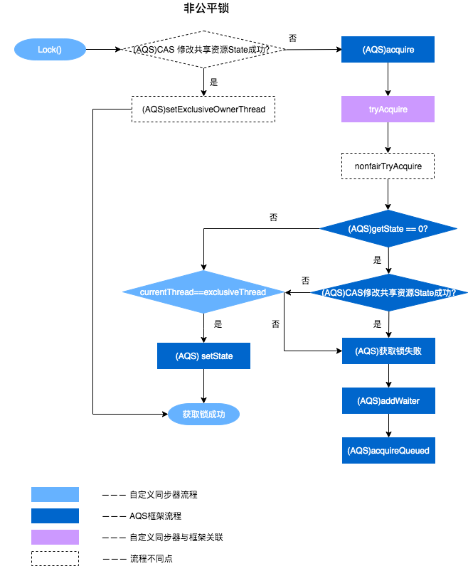
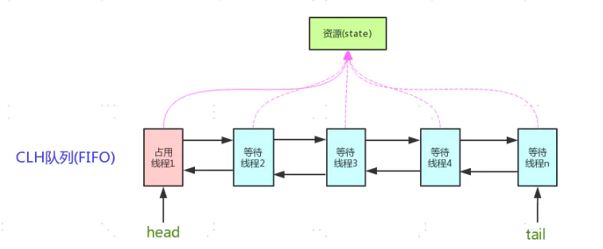
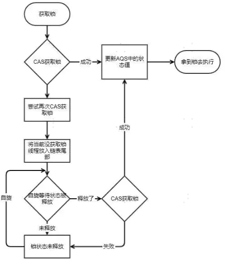
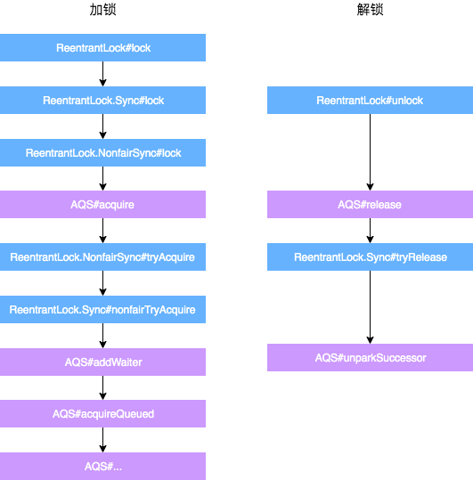
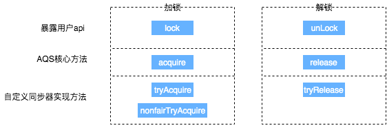
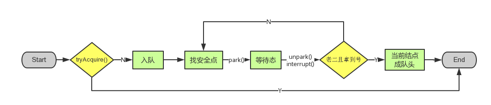

java_并发编程06从ReentrantLock到AQS¶
java锁
从ReentrantLock到AQS¶
关于ReentrantLock不做过多解释，参考上一篇《从锁到ReentrantLock》，简单来说先有Volatile和Synchronized，后来在有了更为灵活的Lock接口，ReentrantLock作为Lock接口的一种实现方式。而ReentrantLock底层便是基于AQS。
见:美团技术团队文章，《从ReentrantLock的实现看AQS的原理及应用》
章节，1.2 ReentrantLock与AQS的关联,2.2 AQS重要方法与ReentrantLock的关联
非公平锁为例，这里主要阐述一下非公平锁与AQS之间方法的关联之处，具体每一处核心方法的作用会在文章后面详细进行阐述。

可见ReentrantLock很大一部分工作依赖AQS完成的，所以ReentrantLock可以看做是AQS的“一种简单实践”。
简单来说，弄懂了AQS，也就明白了ReentrantLock。
那么就来谈谈 AQS吧.
AQS是什么¶
AQS是⼀个⽤来构建锁和同步器的框架，使⽤AQS能简单且⾼效地构造出应⽤⼴泛的同步器，⽐如我们提到的ReentrantLock，Semaphore，ReentrantReadWriteLock，SynchronousQueue，FutureTask等等皆是基于AQS的。
AQS是 AbstractQueuedSynchronizer的简称，即 抽象队列同步器 :
抽象：抽象类，只实现⼀些主要逻辑，有些⽅法由⼦类实现；
队列：使⽤先进先出（FIFO）队列存储数据；
同步：实现了同步的功能。
AQS原理¶
AQS内部使⽤了⼀个volatile的变量state来作为资源的标识。同时定义了⼏个获取和修改state的protected⽅法，⼦类可以覆盖这些⽅法来实现⾃⼰的逻辑：
int getState() ：获取当前同步状态
void setState(int newState) ：设置当前同步状态
boolean compareAndSetState(int expect, int update) 使用CAS设置当前状态。
这三种操作均是原⼦操作，其中compareAndSetState的实现依赖于Unsafe的compareAndSwapInt()⽅法。
⽽AQS类本身实现的是一个排队和阻塞的机制，⽐如具体线程等待队列的维护（如获取资源失败⼊队/唤醒出队等）。它内部使⽤了⼀个先进先出（FIFO）的双端队列，并使⽤了两个指针head和tail⽤于标识队列的头部和尾部。
队列并不是直接储存线程，⽽是储存拥有线程的节点。

核心数据结构：双向链表 + state(锁状态)
底层操作：CAS

AbstractQueuedSynchronizer拥有的子类中可以重写的方法
boolean isHeldExclusively()：当前线程是否独占锁
boolean tryAcquire(int arg)：独占式尝试获取同步状态，通过CAS操作设置同步状态，如果成功返回true，反之返回false
boolean tryRelease(int arg)：独占式释放同步状态。
int tryAcquireShared(int arg)：共享式的获取同步状态，返回大于等于0的值，表示获取成功，反之失败。
boolean tryReleaseShared(int arg)：共享式释放同步状态。
以ReentrantLock为例，state初始化为0，表示未锁定状态。A线程lock()时，会调用tryAcquire()独占该锁并将state+1。此后，其他线程再tryAcquire()时就会失败，直到A线程unlock()到state=0（即释放锁）为止，其它线程才有机会获取该锁。当然，释放锁之前，A线程自己是可以重复获取此锁的（state会累加），这就是可重入的概念。但要注意，获取多少次就要释放多么次，这样才能保证state是能回到零态的。
一般来说，自定义同步器要么是独占方法，要么是共享方式，他们也只需实现tryAcquire-tryRelease、tryAcquireShared-tryReleaseShared中的一种即可。但AQS也支持自定义同步器同时实现独占和共享两种方式，如ReentrantReadWriteLock。
AQS数据结构¶
见:美团技术团队文章，《从ReentrantLock的实现看AQS的原理及应用》
章节，2.1.1 AQS数据结构，2.1.2 同步状态State
Node
几个方法和属性值的含义：
| 方法和属性值 | 含义 | | — | — | | waitStatus | 当前节点在队列中的状态 | | thread | 表示处于该节点的线程 | | prev | 前驱指针 | | predecessor | 返回前驱节点，没有的话抛出npe | | nextWaiter | 指向下一个处于CONDITION状态的节点（由于本篇文章不讲述Condition Queue队列，这个指针不多介绍） | | next | 后继指针 |
线程两种锁的模式：
| 模式 | 含义 | | ——— | ———————— | | SHARED | 表示线程以共享的模式等待锁 | | EXCLUSIVE | 表示线程正在以独占的方式等待锁 |
waitStatus有下面几个枚举值：
0：新结点入队时的默认状态。
SIGNAL(-1)：表示后继结点在等待当前结点唤醒。后继结点入队时，会将前继结点的状态更新为SIGNAL。
CONDITION(-2)：表示结点等待在Condition上，当其他线程调用了Condition的signal()方法后，CONDITION状态的结点将从等待队列转移到同步队列中，等待获取同步锁。
PROPAGATE(-3)：共享模式下，前继结点不仅会唤醒其后继结点，同时也可能会唤醒后继的后继结点。
CANCELLED(1)：表示当前结点已取消调度。当timeout或被中断（响应中断的情况下），会触发变更为此状态，进入该状态后的结点将不会再变化。
注意，负值表示结点处于有效等待状态，而正值表示结点已被取消。所以源码中很多地方用>0、<0来判断结点的状态是否正常。
几个访问这个字段的方法：
| 方法名 | 描述 | | — | — | | protected final int getState() | 获取State的值 | | protected final void setState(int newState) | 设置State的值 | | protected final boolean compareAndSetState(int expect, int update) | 使用CAS方式更新State |
通过ReentrantLock理解AQS¶
公平锁大致流程¶
ReentrantLock和AQS之间方法的交互过程，以非公平锁

加锁：
通过ReentrantLock的加锁方法Lock进行加锁操作。
会调用到内部类Sync的Lock方法，由于Sync#lock是抽象方法，根据ReentrantLock初始化选择的公平锁和非公平锁，执行相关内部类的Lock方法，本质上都会执行AQS的Acquire方法。
AQS的Acquire方法会执行tryAcquire方法，但是由于tryAcquire需要自定义同步器实现，因此执行了ReentrantLock中的tryAcquire方法，由于ReentrantLock是通过公平锁和非公平锁内部类实现的tryAcquire方法，因此会根据锁类型不同，执行不同的tryAcquire。
tryAcquire是获取锁逻辑，获取失败后，会执行框架AQS的后续逻辑，跟ReentrantLock自定义同步器无关。
解锁：
通过ReentrantLock的解锁方法Unlock进行解锁。
Unlock会调用内部类Sync的Release方法，该方法继承于AQS。
Release中会调用tryRelease方法，tryRelease需要自定义同步器实现，tryRelease只在ReentrantLock中的Sync实现，因此可以看出，释放锁的过程，并不区分是否为公平锁。
释放成功后，所有处理由AQS框架完成，与自定义同步器无关。
通过上面的描述，大概可以总结出ReentrantLock加锁解锁时API层核心方法的映射关系。

01,NonfairSync.lock¶
ReentrantLock中公平锁和非公平锁在底层是相同的，这里以非公平锁为例进行分析。
在非公平锁中，有一段这样的代码：
// java.util.concurrent.locks.ReentrantLock
static final class NonfairSync extends Sync {
...
final void lock() {
if (compareAndSetState(0, 1))
setExclusiveOwnerThread(Thread.currentThread());
else
acquire(1);
}
...
}
// java.util.concurrent.locks.AbstractQueuedSynchronizer
public final void acquire(int arg) {
if (!tryAcquire(arg) && acquireQueued(addWaiter(Node.EXCLUSIVE), arg))
selfInterrupt();
}
protected boolean tryAcquire(int arg) {
throw new UnsupportedOperationException();
}
通过阅读以上代码，可以看出，
01,这里只是AQS的简单实现，具体获取锁的实现方法是由各自的公平锁和非公平锁单独实现的（以ReentrantLock为例）。如果该方法返回了True，则说明当前线程获取锁成功，就不用往后执行了；如果获取失败，就需要加入到等待队列中。
02,NonfairSync.lock的核心方法就是acquire(1).那就深挖acquire(1)
02,acquire(int)¶
此方法是独占模式下线程获取共享资源的顶层入口。如果获取到资源，线程直接返回，否则进入等待队列，直到获取到资源为止，且整个过程忽略中断的影响。这也正是lock()的语义，当然不仅仅只限于lock()。获取到资源后，线程就可以去执行其临界区代码了。下面是acquire()的源码：
1 public final void acquire(int arg) {
2 if (!tryAcquire(arg) &&
3 acquireQueued(addWaiter(Node.EXCLUSIVE), arg))
4 selfInterrupt();
5 }
函数流程如下：
01,tryAcquire()尝试直接去获取资源，如果成功则直接返回（这里体现了非公平锁，每个线程获取锁时会尝试直接抢占加塞一次，而CLH队列中可能还有别的线程在等待）；
02,addWaiter()将该线程加入等待队列的尾部，并标记为独占模式；
03,acquireQueued()使线程阻塞在等待队列中获取资源，一直获取到资源后才返回。如果在整个等待过程中被中断过，则返回true，否则返回false。
04,如果线程在等待过程中被中断过，它是不响应的。只是获取资源后才再进行自我中断selfInterrupt()，将中断补上。
这时单凭这4个抽象的函数来看流程还有点朦胧，不要紧，看完接下来的分析后，你就会明白了。就像《大话西游》里唐僧说的：等你明白了舍生取义的道理，你自然会回来和我唱这首歌的。
这里出现三个函数tryAcquire,addWaiter和acquireQueued，下面依次跟进这三个函数。
02.01tryAcquire(int)¶
此方法尝试去获取独占资源。如果获取成功，则直接返回true，否则直接返回false。这也正是tryLock()的语义，还是那句话，当然不仅仅只限于tryLock()。如下是tryAcquire()的源码：
1 protected boolean tryAcquire(int arg) {
2 throw new UnsupportedOperationException();
3 }
什么？直接throw异常？AQS只是一个框架，具体资源的获取/释放方式交由自定义同步器去实现吗？就是这里了！！！
这里之所以没有定义成abstract，是因为独占模式下只用实现tryAcquire-tryRelease，而共享模式下只用实现tryAcquireShared-tryReleaseShared。如果都定义成abstract，那么每个模式也要去实现另一模式下的接口。说到底，Doug Lea还是站在咱们开发者的角度，尽量减少不必要的工作量。
02.02addWaiter(Node)¶
该方法用于将当前线程根据不同的模式（Node.EXCLUSIVE互斥模式、Node.SHARED共享模式）加入到等待队列的队尾，并返回当前线程所在的结点。如果队列不为空，则以通过compareAndSetTail方法以CAS的方式将当前线程节点加入到等待队列的末尾。否则，通过enq(node)方法初始化一个等待队列，并返回当前节点。源码如下：
1 private Node addWaiter(Node mode) {
2 //以给定模式构造结点。mode有两种：EXCLUSIVE（独占）和SHARED（共享）
3 Node node = new Node(Thread.currentThread(), mode);
4
5 //尝试快速方式直接放到队尾。
6 Node pred = tail;
7 if (pred != null) {
8 node.prev = pred;
9 if (compareAndSetTail(pred, node)) {
10 pred.next = node;
11 return node;
12 }
13 }
14
15 //上一步失败则通过enq入队。
16 enq(node);
17 return node;
18 }
不用再说了，直接看注释吧。
02.02addWaiter(Node)_enq(Node)¶
用于将当前节点插入等待队列，如果队列为空，则初始化当前队列。整个过程以CAS自旋volatile变量的方式进行，直到成功加入队尾为止。源码如下：
1 private Node enq(final Node node) {
2 //CAS"自旋"，直到成功加入队尾
3 for (;;) {
4 Node t = tail;
5 if (t == null) { // 队列为空，创建一个空的标志结点作为head结点，并将tail也指向它。
6 if (compareAndSetHead(new Node()))
7 tail = head;
8 } else {//正常流程，放入队尾
9 node.prev = t;
10 if (compareAndSetTail(t, node)) {
11 t.next = node;
12 return t;
13 }
14 }
15 }
16 }
02.03acquireQueued(Node, int)¶
通过tryAcquire()和addWaiter()，该线程获取资源失败，已经被放入等待队列尾部了。聪明的你立刻应该能想到该线程下一部该干什么了吧：进入等待状态休息，直到其他线程彻底释放资源后唤醒自己，自己再拿到资源，然后就可以去干自己想干的事了。没错，就是这样！是不是跟医院排队拿号有点相似~~acquireQueued()就是干这件事：在等待队列中排队拿号（中间没其它事干可以休息），直到拿到号后再返回。
acquireQueued()用于队列中的线程自旋地以独占且不可中断的方式获取同步状态（acquire），直到拿到锁之后再返回。该方法的实现分成两部分：如果当前节点已经成为头结点，尝试获取锁（tryAcquire）成功，然后返回；否则检查当前节点是否应该被park，然后将该线程park并且检查当前线程是否被可以被中断。
这个函数非常关键，还是上源码吧：
1 final boolean acquireQueued(final Node node, int arg) {
2 boolean failed = true;//标记是否成功拿到资源
3 try {
4 boolean interrupted = false;//标记等待过程中是否被中断过
5
6 //又是一个“自旋”！
7 for (;;) {
8 final Node p = node.predecessor();//拿到前驱
9 //如果前驱是head，即该结点已成老二，那么便有资格去尝试获取资源（可能是老大释放完资源唤醒自己的，当然也可能被interrupt了）。
10 if (p == head && tryAcquire(arg)) {
11 setHead(node);//拿到资源后，将head指向该结点。所以head所指的标杆结点，就是当前获取到资源的那个结点或null。
12 p.next = null; // setHead中node.prev已置为null，此处再将head.next置为null，就是为了方便GC回收以前的head结点。也就意味着之前拿完资源的结点出队了！
13 failed = false; // 成功获取资源
14 return interrupted;//返回等待过程中是否被中断过
15 }
16
17 //如果自己可以休息了，就通过park()进入waiting状态，直到被unpark()。如果不可中断的情况下被中断了，那么会从park()中醒过来，发现拿不到资源，从而继续进入park()等待。
18 if (shouldParkAfterFailedAcquire(p, node) &&
19 parkAndCheckInterrupt())
20 interrupted = true;//如果等待过程中被中断过，哪怕只有那么一次，就将interrupted标记为true
21 }
22 } finally {
23 if (failed) // 如果等待过程中没有成功获取资源（如timeout，或者可中断的情况下被中断了），那么取消结点在队列中的等待。
24 cancelAcquire(node);
25 }
26 }
到这里了，我们先不急着总结acquireQueued()的函数流程，先看看shouldParkAfterFailedAcquire()和parkAndCheckInterrupt()具体干些什么。
02.03acquireQueued(Node, int)_shouldParkAfterFailedAcquire(Node, Node)¶
此方法主要用于检查状态，看看自己是否真的可以去休息了（进入waiting状态，如果线程状态转换不熟，可以参考本人上一篇写的Thread详解），万一队列前边的线程都放弃了只是瞎站着，那也说不定，对吧！
2 int ws = pred.waitStatus;//拿到前驱的状态
3 if (ws == Node.SIGNAL)
4 //如果已经告诉前驱拿完号后通知自己一下，那就可以安心休息了
5 return true;
6 if (ws > 0) {
7 /*
8 * 如果前驱放弃了，那就一直往前找，直到找到最近一个正常等待的状态，并排在它的后边。
9 * 注意：那些放弃的结点，由于被自己“加塞”到它们前边，它们相当于形成一个无引用链，稍后就会被保安大叔赶走了(GC回收)！
10 */
11 do {
12 node.prev = pred = pred.prev;
13 } while (pred.waitStatus > 0);
14 pred.next = node;
15 } else {
16 //如果前驱正常，那就把前驱的状态设置成SIGNAL，告诉它拿完号后通知自己一下。有可能失败，人家说不定刚刚释放完呢！
17 compareAndSetWaitStatus(pred, ws, Node.SIGNAL);
18 }
19 return false;
20 }
整个流程中，如果前驱结点的状态不是SIGNAL，那么自己就不能安心去休息，需要去找个安心的休息点，同时可以再尝试下看有没有机会轮到自己拿号。
02.03acquireQueued(Node, int)_parkAndCheckInterrupt()¶
该方法让线程去休息，真正进入等待状态。park()会让当前线程进入waiting状态。在此状态下，有两种途径可以唤醒该线程：1）被unpark()；2）被interrupt()。需要注意的是，Thread.interrupted()会清除当前线程的中断标记位。
1 private final boolean parkAndCheckInterrupt() {
2 LockSupport.park(this);//调用park()使线程进入waiting状态
3 return Thread.interrupted();//如果被唤醒，查看自己是不是被中断的。
4 }
02.03acquireQueued(Node, int)_小结¶
看了shouldParkAfterFailedAcquire()和parkAndCheckInterrupt()，现在让我们再回到acquireQueued()，总结下该函数的具体流程：
01，结点进入队尾后，检查状态，找到安全休息点；
02，调用park()进入waiting状态，等待unpark()或interrupt()唤醒自己；
03，被唤醒后，看自己是不是有资格能拿到号。如果拿到，head指向当前结点，并返回从入队到拿到号的整个过程中是否被中断过；如果没拿到，继续流程1。
03,acquire(int)_小结¶
acquireQueued()分析完之后，我们接下来再回到acquire()！再贴上它的源码吧：
1 public final void acquire(int arg) {
2 if (!tryAcquire(arg) &&
3 acquireQueued(addWaiter(Node.EXCLUSIVE), arg))
4 selfInterrupt();
5 }
再来总结下它的流程吧：
01，调用自定义同步器的tryAcquire()尝试直接去获取资源，如果成功则直接返回；
02，没成功，则addWaiter()将该线程加入等待队列的尾部，并标记为独占模式；
03，acquireQueued()使线程在等待队列中休息，有机会时（轮到自己，会被unpark()）会去尝试获取资源。获取到资源后才返回。如果在整个等待过程中被中断过，则返回true，否则返回false。
04，如果线程在等待过程中被中断过，它是不响应的。只是获取资源后才再进行自我中断selfInterrupt()，将中断补上。
由于此函数是重中之重，我再用流程图总结一下：

04,release(int)¶
上一小节已经把acquire()说完了，这一小节就来讲讲它的反操作release()吧。
此方法是独占模式下线程释放共享资源的顶层入口。它会释放指定量的资源，如果彻底释放了（即state=0）,它会唤醒等待队列里的其他线程来获取资源。这也正是unlock()的语义，当然不仅仅只限于unlock()。下面是release()的源码：
1 public final boolean release(int arg) {
2 if (tryRelease(arg)) {
3 Node h = head;//找到头结点
4 if (h != null && h.waitStatus != 0)
5 unparkSuccessor(h);//唤醒等待队列里的下一个线程
6 return true;
7 }
8 return false;
9 }
逻辑并不复杂。它调用tryRelease()来释放资源。有一点需要注意的是，它是根据tryRelease()的返回值来判断该线程是否已经完成释放掉资源了！所以自定义同步器在设计tryRelease()的时候要明确这一点！！
04.01tryRelease(int)¶
此方法尝试去释放指定量的资源。下面是tryRelease()的源码：
1 protected boolean tryRelease(int arg) {
2 throw new UnsupportedOperationException();
3 }
跟tryAcquire()一样，这个方法是需要独占模式的自定义同步器去实现的。
正常来说，tryRelease()都会成功的，因为这是独占模式，该线程来释放资源，那么它肯定已经拿到独占资源了，直接减掉相应量的资源即可(state-=arg)，也不需要考虑线程安全的问题。但要注意它的返回值，上面已经提到了，release()是根据tryRelease()的返回值来判断该线程是否已经完成释放掉资源了！所以自义定同步器在实现时，如果已经彻底释放资源(state=0)，要返回true，否则返回false。
04.02unparkSuccessor(Node)¶
此方法用于唤醒等待队列中下一个线程。下面是源码：
1 private void unparkSuccessor(Node node) {
2 //这里，node一般为当前线程所在的结点。
3 int ws = node.waitStatus;
4 if (ws < 0)//置零当前线程所在的结点状态，允许失败。
5 compareAndSetWaitStatus(node, ws, 0);
6
7 Node s = node.next;//找到下一个需要唤醒的结点s
8 if (s == null || s.waitStatus > 0) {//如果为空或已取消
9 s = null;
10 for (Node t = tail; t != null && t != node; t = t.prev) // 从后向前找。
11 if (t.waitStatus <= 0)//从这里可以看出，<=0的结点，都是还有效的结点。
12 s = t;
13 }
14 if (s != null)
15 LockSupport.unpark(s.thread);//唤醒
16 }
这个函数并不复杂。一句话概括：用unpark()唤醒等待队列中最前边的那个未放弃线程，这里我们也用s来表示吧。此时，再和acquireQueued()联系起来，s被唤醒后，进入if (p == head && tryAcquire(arg))的判断（即使p!=head也没关系，它会再进入shouldParkAfterFailedAcquire()寻找一个安全点。这里既然s已经是等待队列中最前边的那个未放弃线程了，那么通过shouldParkAfterFailedAcquire()的调整，s也必然会跑到head的next结点，下一次自旋p==head就成立啦），然后s把自己设置成head标杆结点，表示自己已经获取到资源了，acquire()也返回了！！
05,release(int)_小结¶
release()是独占模式下线程释放共享资源的顶层入口。它会释放指定量的资源，如果彻底释放了（即state=0）,它会唤醒等待队列里的其他线程来获取资源。
74楼的朋友提了一个非常有趣的问题：如果获取锁的线程在release时异常了，没有unpark队列中的其他结点，这时队列中的其他结点会怎么办？是不是没法再被唤醒了？
答案是YES（测试程序详见76楼）！！！这时，队列中等待锁的线程将永远处于park状态，无法再被唤醒！！！但是我们再回头想想，获取锁的线程在什么情形下会release抛出异常呢？？
01,线程突然死掉了？可以通过thread.stop来停止线程的执行，但该函数的执行条件要严苛的多，而且函数注明是非线程安全的，已经标明Deprecated；
02,线程被interupt了？线程在运行态是不响应中断的，所以也不会抛出异常；
03,release代码有bug，抛出异常了？目前来看，Doug Lea的release方法还是比较健壮的，没有看出能引发异常的情形（如果有，恐怕早被用户吐槽了）。除非自己写的tryRelease()有bug，那就没啥说的，自己写的bug只能自己含着泪去承受了。
参考¶
AQS的具体实现一：ReentrantLock：https://blog.csdn.net/qq_35015148/article/details/111145605
从ReentrantLock的实现看AQS的原理及应用:https://tech.meituan.com/2019/12/05/aqs-theory-and-apply.html
Java并发之AQS详解：https://www.cnblogs.com/waterystone/p/4920797.html
java并发编程基础 —AQS框架（基于1.8源码分析）：https://www.jianshu.com/p/663aad45a811